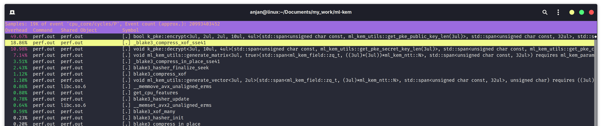
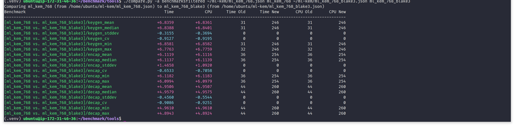
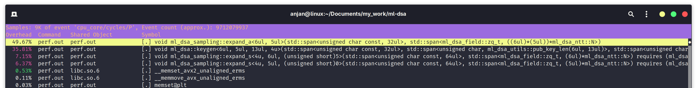
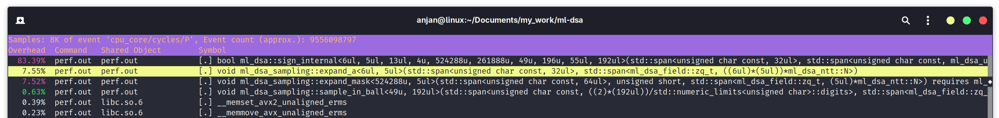
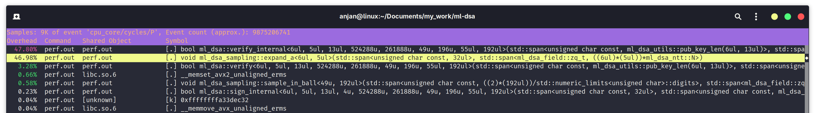
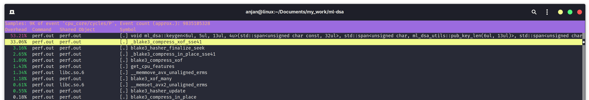
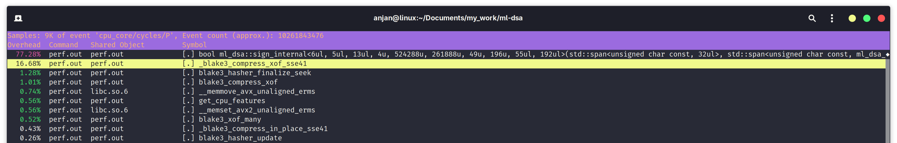
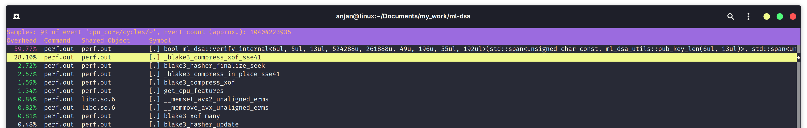
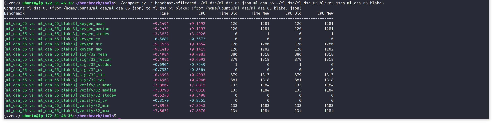

In the following writing, we try to figure out speedup gain in software implementation of NIST standardized post-quantum cryptography (PQC) suite,
by switching to BLAKE3, for faster hashing. We will look at two (recently) NIST standardized PQC schemes - ML-KEM (FIPS 203) and ML-DSA (FIPS 204).
ML-KEM is a next generation key encapsulation mechanism (KEM), designed to resist attackers with access to quantum computer.
Its hardness assumption is based on a lattice problem. ML-KEM allows two peers to agree on a shared-secret, while
communicating over an insecure channel. The agreed upon shared-secret key can then be used with any symmetric-key construction for
faster encrypted and authenticated communication. ML-KEM standard is accessible @ https://doi.org/10.6028/NIST.FIPS.203.
On other hand, ML-DSA is a NIST standardized digital signature algorithm (DSA), designed to replace currently used ECDSA and EdDSA, which are based on the
hardness of discrete logarithm problem (DLP) in context of elliptic curves. ML-DSA's hardness assumption is also based on a similar kind of lattice problem.
ML-DSA helps in establishing the authenticity and integrity of a message. It also prevents the signer from denying that they signed a message, anytime in future.
ML-DSA standard is accessible @ https://doi.org/10.6028/NIST.FIPS.204.
These two algorithms are very important for future of encrypted communication, specially in a world with Cryptographically Relevant Quantum Computer (CRQC).
By design, both ML-KEM and ML-DSA uses NIST standardized hash functions from SHA3 i.e. FIPS 202. SHA3 hash functions offer excellent security
margin. They are based on keccak-p[1600; 24] - 24-rounds keccak permutation, applied on 1600-bit wide state.
Though they are not as much performant as we would ideally want them to be, in software. Hence, we swap out SHA3-based hashing with BLAKE3, for much faster hashing in NIST PQC schemes.
In following section, we wil observe that a huge chunk of compute time during ML-KEM and ML-DSA execution is spent just on hashing. We hope to reduce
end-to-end latency of NIST PQC algorithms by switching to faster hash function like BLAKE3. BLAKE3 is known for being the fastest cryptographic hash function.
There are two main reasons for BLAKE3 being that.
Let's begin with ML-KEM. For sake of this experimentation, we will use C++ header-only library implementation of ML-KEM @ https://github.com/itzmeanjan/ml-kem.git (commit id: 0d7996dad0e8ef343fb957eb58e58d861cffc938).
In this modular implementation, we use a separate module for SHA3 hashing. ML-KEM library uses https://github.com/itzmeanjan/sha3.git as git submodule based dependency for hashing.
For understanding if it's worth replacing SHA3-based hashing with much faster BLAKE3-based hashing, we will use Linux performance analysis tool perf, when benchmarking ML-KEM.
Following screen capture demonstrates, during ML-KEM encapsulation and decapsulation, 33.19% time is spent in generate_matrix() function.
generate_matrix() simply generates a matrix, using the method of rejection sampling, given a seeded eXtendable Output Function (XOF) such as SHAKE128.
Another big compute time consumer is generate_vector() function, costing us 5.91% of time.
generate_vector() also samples a vector of polynomials, from a seeded SHAKE256 XOF instance.
These two functions, mainly absorbs bytes into keccak[1600] permutation state; permutes using 24-rounds keccak permutation
and squeezes arbitrary many bytes out of the keccak[1600] instance. This costs us 39.1% of time during ML-KEM encapsulation and decapsulation - spent just on hashing.
We can try to optimize ML-KEM, by using faster hash function like BLAKE3.
Let's begin by setting up BLAKE3 C implementation. BLAKE3 team maintains an optimized C implementation @ https://github.com/BLAKE3-team/BLAKE3/tree/1.8.2/c. As our ML-KEM and ML-DSA libraries are implemented as C++ header-only libraries, we can simply wrap BLAKE3 API as sponge like functions in a C++ class. Like shown below. We will replace any use of SHA3 hash functions, with following interface.
NIST standard for ML-KEM i.e. FIPS 203 proposes parameters for three security levels. For this demonstration, we will only focus on ML-KEM-768, offering 192-bit of security. Let's run the benchmarks on an Intel x86_64 desktop machine, running Linux 6.17.0-5-generic kernel. The benchmark executable is compiled using GCC 15.2.0, with flags -O3 -march=native.
Important numbers to note down. For ML-KEM-768, on Intel x86_64 Alderlake architecture, keygen, encaps and decaps take following median time to execute.
| ML-KEM Algorithm | Median Time to Execute |
|---|---|
| Key Generation | 21.9 us |
| Encapsulation | 25.9 us |
| Decapsulation | 31.5 us |
Now we can swap out hashing with SHA3 and switch to BLAKE3 hasher API, we just defined above. We will call these instances of ML-KEM as ML-KEM-B. The necessary patch for ML-KEM-B lives @ https://github.com/itzmeanjan/ml-kem/tree/ml-kem-b (commit id: 03ca3cd1febfd16486324a882f44c93b3dbcab51). Benchmarking on same the machine, gives us following result.
Let's note down median time to execute ML-KEM-768-with-BLAKE3 keygen, encaps and decaps.
| ML-KEM-B Algorithm | Median Time to Execute |
|---|---|
| Key Generation | 17.9 us |
| Encapsulation | 21.4 us |
| Decapsulation | 27.5 us |
Comparing ML-KEM performance metrics table with ML-KEM-B table, shows a clear advantage in choosing BLAKE3 for hashing purposes, in ML-KEM.
On a side note, we are using google-benchmark for benchmarking ML-KEM functions. And google-benchmark comes with a nice tool for comparing
benchmark results. We can use that to produce a nice tabular report, showing performance improvement or degradation by choosing to use BLAKE3 for hashing in ML-KEM algorithms.
How to use google-benchmark comparison tool is described in a guide @ https://github.com/google/benchmark/blob/v1.9.4/docs/tools.md.
Using the benchmark comparison tool for comparing performance of ML-KEM vs. ML-KEM-B, on x86_64, gives us following result.
In short, by switching to BLAKE3, ML-KEM-768 reduces latency in all three algorithms.
Now if we use Linux kernel's perf tool to inspect performance bottleneck in the ML-KEM-B variant, we notice that only 7.14% time is spent in generate_matrix(), much lesser than ML-KEM variant. Instead now blake3_compress_xof_sse41() is taking 18.86% of encapsulation and decapsulation compute time. It clearly show BLAKE3 C implementation intelligently finds optimized code path and executes it based on available CPU features. That's exactly what get_cpu_features() is for, in following perf report. Our SHA3 C++ header-only library implementation lacks this feature. Also note that, SHA3 hash functions are not tree hashing mode - there are less SIMD parallelism opportunities to exploit for faster hashing in SHA3. Ignoring that fact, BLAKE3 has reduced latency in ML-KEM function's running time. A clear win.
For sake of completeness, we run ML-KEM vs. ML-KEM-BLAKE3 benchmark comparison on an aarch64 server-grade CPU i.e. AWS c8g.large instance, featuring a Graviton4 CPU. More resources on AWS c8g.large instance @ https://aws.amazon.com/ec2/instance-types/c8g. To our complete surprise, ML-KEM-BLAKE3 turns out to be multiple times slower compared to the base version i.e. NIST ML-KEM. We suspect it is because of some sort of compile-time misconfiguration or issues with runtime CPU feature detection, in BLAKE3 C implementation.
In the rest of the post, we will focus on ML-DSA and see how does its performance characteristics change by switching to BLAKE3. NIST standard for ML-DSA i.e. FIPS 204 recommends using hash functions and extendable output functions from SHA3 standard i.e. FIPS 202. In this experiment, we use ML-DSA C++ header-only library implementation @ https://github.com/itzmeanjan/ml-dsa.git (commit id: dfb9b0fa187fa73d5d239f92b9625f3d7738da4c). ML-DSA standard proposes parameters for three security levels. In following experiment, we choose to work with only ML-DSA-65 i.e. the parameter set providing us with 192-bit security. To begin with, we will use Linux kernel's perf tool to find performance bottleneck in ML-DSA-65 keygen, sign and verify, separately.
In the following screen capture of $ perf report command output of ML-DSA-65 key generation algorithm, we see 49.67% time is spent on expand_a(). What expand_a() does is, it takes a seed to initialize a SHAKE128 XOF instance, from which it deterministically samples a public matrix A, using the method of rejection sampling. Below that, two invocations of expand_s(), consuming upto 7.15% and 6.37% of time spent during key generation. expand_s() similarly samples LWE secret vector s, from a seeded SHAKE256 XOF instance. These three function calls combined, takes up a whopping 63.19% of total execution time of ML-DSA key generation algorithm. And it's all basically hashing using XOFs, defined in SHA3 standard.
In following screen capture, we find main bottlenecks in ML-DSA-65 signing execution. Like in key generation, we have to invoke expand_a() to deterministically sample public matrix A, from a seeded SHAKE128 XOF instance. It takes up 7.55% of total execution time. Both expand_mask() and sample_in_ball() sample from a seeded SHAKE256 XOF instance. expand_mask() costs 7.52% of execution time of sign algorithm. During ML-DSA signing, we end up spending 15.7% of total time in just hashing using SHA3.
And finally, in the following screen capture, we find performance bottleneck in ML-DSA signature verification flow. We again encounter expand_a(), taking up a whopping 46.98% of execution time of verify algorithm. It absorbs a fixed length seed into the keccak[1600] permutation state; permutes the state using 24-rounds keccak permutation and finally squeezes bytes out of the keccak[1600] permutation state, for rejection sampling coefficients of public matrix A. That's a huge chunk of verification algorithm's compute time, being occupied in just hashing. It's quite evident that switching to a faster hash function should improve performance.
Let's run the benchmarks on an Intel x86_64 Alderlake mobile CPU, running Linux 6.17.0-5-generic kernel. Benchmark executable is compiled with GCC 15.2.0, with flags -O3 -march=native.
Important numbers to note down, from above screen capture - median time to execute ML-DSA-65 key generation, signing and verification. Note, when benchmarking signing and verification, we work with fixed size 32-bytes message.
| ML-DSA Algorithm | Median Time to Execute |
|---|---|
| Key Generation | 94.6 us |
| Signing | 637 us |
| Verification | 100 us |
It's time to replace hashing with SHA3, by BLAKE3 hasher. We will call these instances of ML-DSA as ML-DSA-B i.e. ML-DSA with BLAKE3. The necessary patch for ML-DSA-B lives @ https://github.com/itzmeanjan/ml-dsa/tree/ml-dsa-b (commit id: 29204af36d7d873efeaa41db4980a4126097621c). Benchmarking on the same machine, gives us following result. For reproducing benchmark results of ML-DSA-B, run following commands.
Let's note down median time to execute key generation, signing and verification, for ML-DSA-65 with BLAKE3 for hashing.
| ML-DSA-B Algorithm | Median Time to Execute |
|---|---|
| Key Generation | 71.4 us |
| Signing | 143 us |
| Verification | 78.3 us |
Comparing above two tables, clearly shows switching to BLAKE3, is advantageous, in case of ML-DSA too. For all three algorithms, ML-DSA-B shows a strong upperhand over NIST ML-DSA, from software performance point of view. Let's use google-benchmark's comparison tool to get a nice tabular output of performance comparison between ML-DSA-65 and ML-DSA-65-BLAKE3. In following screen capture, we see, by choosing to use BLAKE3 for hashing in ML-DSA-65, we are saving a substantial amount of execution time.
The performance improvement in message signing looks too good to be true. And we have an explanation for it. It doesn't just come by switching to BLAKE3.
ML-DSA is a digital signature scheme of "Fiat-Shamir with Aborts" paradigm - simply put, when signing a message, it may need to abort and restart again,
multiple times, based on what message is being signed or what random seed is being used for default "hedged" signing mode.
To reduce influence of cryptographically secure pseudo-random number generator (CSPRNG), we fix the seed. A CSPRNG, initialized with a fixed seed, is used
for sampling message and seed, when benchmarking ML-DSA and ML-DSA-B sign algorithm. But note, due to the use of different hash functions in ML-DSA and ML-DSA-B,
we end up deriving different matrices and vectors, from SHA3 and BLAKE3 hasher, respectively. That injects different pseudo-randomness in ML-DSA-B, than in ML-DSA.
As a result of it, we encounter this too good to be true performance boost.
We roughly estimate, if ML-DSA didn't require abort in middle of signing, performance gain by switching to BLAKE3 would be more
consistent with others - in the range of 20-30%, on x86_64. That will be on par with ML-DSA keygen and verify. Even ML-KEM shows similar kind of performance boost by switching to BLAKE3.
After applying ML-DSA-B patch, we analyse changes in performance bottleneck for ML-DSA-65-BLAKE3 keygen, sign and verify. Let's begin with ML-DSA-65-BLAKE3 key generation. In following screen capture, we see BLAKE3 function blake3_compress_xof_sse41() taking up 33.06% of execution time during key generation. Several small chunks of execution time is also occupied by other BLAKE3 functions such as compression or finalization. The call to get_cpu_features() shows BLAKE3 C implementation is inspecting supported hardware features at runtime and executing best code path for faster SIMD parallel hashing. The expand_a() function, which was occupying 49.67% time, when hashing with SHA3, is nowhere to be seen.
In following screen capture, we look for bottleneck in execution of signing algorithm with ML-DSA-B. The bottleneck has shifted from expand_a() or expand_mask() to our familiar blake3_compress_xof_sse41(). We are still spending a minimum of 16.68% time in compressing BLAKE3 chunks (read hashing), but overall it's taking us lesser time, due to faster running time of BLAKE3, in software.
Finally we look at the current state of performance bottleneck in signature verification algorithm, with ML-DSA-B. And again, as expected, expand_a(), which was occupying 49.67% of execution time, with standard ML-DSA-65, is nowhere to be seen as a bottleneck. Instead we find that, we are spending 28.1% of execution time in compressing BLAKE3 chunks, invoking blake3_compress_xof_sse41(), exploiting SSE4.1-based SIMD parallelism.
For sake of completeness in our analysis, we run performance comparison of ML-DSA vs. ML-DSA-B, on an aarch64 server-grade CPU i.e. AWS c8g.large instance, featuring a Graviton4 CPU. Same as ML-KEM, ML-DSA-B turns out to be several times slower than ML-DSA, on aarch64 target. Our suspicion is, it is due to some sort of compile-time misconfiguration or issues with runtime CPU feature detection, in BLAKE3 C implementation, when targeting aarch64.

With this, we finish our analysis on "Is there any advantage of switching to BLAKE3 for faster hashing in NIST PQC standards?".
We answer affirmatively. We analyzed 192-bit security parameter for both ML-KEM and ML-DSA. For sake of experimentation, we chose to use C++ header-only library implementation
of ML-KEM https://github.com/itzmeanjan/ml-kem.git and ML-DSA https://github.com/itzmeanjan/ml-dsa.git, as baseline.
Both of them use SHA3 C++ header-only implementation @ https://github.com/itzmeanjan/sha3.git, as git submodule based dependency.
We replace hashing with SHA3 by BLAKE3 C implementation @ https://github.com/BLAKE3-team/BLAKE3/tree/1.8.2/c.
By switching to BLAKE3, we observe quite substantial performance gain for both ML-KEM and ML-DSA, on x86_64 target.
ML-KEM-B keygen() is 24.06% faster, encaps() is 23.32% faster and decaps() is 17.21% faster, compared to standard ML-KEM.
ML-DSA-B keygen() is 24.55% faster, sign() is 77.52% faster and verify() is 21.79% faster, compared to standard ML-DSA.
Last but not least. In this writing, we have established that switching to BLAKE3 for faster hashing can be overall good for NIST PQC standard ML-KEM and ML-DSA.
But we must mention, that is not the only way to speed up ML-KEM and ML-DSA. Recall that, we mentioned SHA3 hash functions and extendable output functions provide
us with an excellent security margin - as they are backed by keccak-p[1600, 24] i.e. 24-rounds keccak permutation on 1600-bit wide state. But this is quite a conservative
parameterization. We can halve the number of rounds to 12 and we get TurboSHAKE, which was formally specified in https://eprint.iacr.org/2023/342.
A Rust library implementation of TurboSHAKE @ https://github.com/itzmeanjan/turboshake/tree/v0.5.0,
shows interesting performance characteristics. It almost doubles the throughput of hashing, powered by the same keccak permutation. A future work will be to experiment with using TurboSHAKE instances for faster
hashing in NIST PQC suite. That will allow us to compare performance gain, in NIST PQC suite, by switching to BLAKE3 vs. TurboSHAKE.